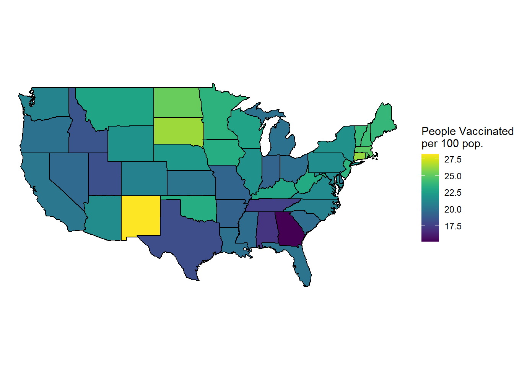

# Initial packages required (we'll be adding more)
library(tidyverse)
library(mdsr) # package associated with our MDSR bookCreating informative maps
Based on Section 3.2.3 from Modern Data Science with R.
You can download this .qmd file from here. Just hit the Download Raw File button.
Choropleth Maps
When you have specific regions (e.g. countries, states, counties, census tracts,…) and a value associated with each region.
A choropleth map will color the entire region according to the value. For example, let’s consider state vaccination data from March 2021.
vaccines <- read_csv("https://proback.github.io/264_fall_2024/Data/vacc_Mar21.csv")
vacc_mar13 <- vaccines |>
filter(Date =="2021-03-13") |>
select(State, Date, people_vaccinated_per100, share_doses_used, Governor)
vacc_mar13# A tibble: 50 × 5
State Date people_vaccinated_per100 share_doses_used Governor
<chr> <date> <dbl> <dbl> <chr>
1 Alabama 2021-03-13 17.2 0.671 R
2 Alaska 2021-03-13 27.0 0.686 R
3 Arizona 2021-03-13 21.5 0.821 R
4 Arkansas 2021-03-13 19.2 0.705 R
5 California 2021-03-13 20.3 0.726 D
6 Colorado 2021-03-13 20.8 0.801 D
7 Connecticut 2021-03-13 26.2 0.851 D
8 Delaware 2021-03-13 20.2 0.753 D
9 Florida 2021-03-13 20.1 0.766 R
10 Georgia 2021-03-13 15.2 0.674 R
# ℹ 40 more rowsThe tricky part of choropleth maps is getting the shapes (polygons) that make up the regions. This is really a pretty complex set of lines for R to draw!
Luckily, some maps are already created in R in the maps package.
library(maps)
us_states <- map_data("state")
head(us_states) long lat group order region subregion
1 -87.46201 30.38968 1 1 alabama <NA>
2 -87.48493 30.37249 1 2 alabama <NA>
3 -87.52503 30.37249 1 3 alabama <NA>
4 -87.53076 30.33239 1 4 alabama <NA>
5 -87.57087 30.32665 1 5 alabama <NA>
6 -87.58806 30.32665 1 6 alabama <NA># Note that points in the same "group" are connected with a line
us_states |>
ggplot(mapping = aes(x = long, y = lat,
group = group)) +
geom_polygon(fill = "white", color = "black")
vacc_mar13 <- vacc_mar13 |>
mutate(State = str_to_lower(State))
vacc_mar13 |>
right_join(us_states, by = c("State" = "region")) |>
rename(region = State) |>
ggplot(mapping = aes(x = long, y = lat,
group = group)) +
geom_polygon(aes(fill = people_vaccinated_per100), color = "black")oops, New York appears to be a problem.
vacc_mar13 <- vacc_mar13 |>
mutate(State = str_replace(State, " state", ""))
vacc_mar13 |>
anti_join(us_states, by = c("State" = "region"))# A tibble: 2 × 5
State Date people_vaccinated_per100 share_doses_used Governor
<chr> <date> <dbl> <dbl> <chr>
1 alaska 2021-03-13 27.0 0.686 R
2 hawaii 2021-03-13 22.8 0.759 D us_states |>
anti_join(vacc_mar13, by = c("region" = "State")) %>%
count(region) region n
1 district of columbia 10Better.
library(viridis) # for color schemes
vacc_mar13 |>
right_join(us_states, by = c("State" = "region")) |>
rename(region = State) |>
ggplot(mapping = aes(x = long, y = lat,
group = group)) +
geom_polygon(aes(fill = people_vaccinated_per100), color = "black") +
labs(fill = "People Vaccinated\nper 100 pop.") +
# This scales the longitude and latitude so that the shapes look correct.
coord_map() +
# This theme can give you a really clean look!
theme_void() +
# you can change the fill scale for different color schemes.
scale_fill_viridis() 
You can also use a categorical variable to color regions:
vacc_mar13 |>
right_join(us_states, by = c("State" = "region")) |>
rename(region = State) |>
ggplot(mapping = aes(x = long, y = lat,
group = group)) +
geom_polygon(aes(fill = Governor), color = "darkgrey", linewidth = 0.2) +
labs(fill = "Governor") +
# This scales the longitude and latitude so that the shapes look correct.
coord_map() +
# This theme can give you a really clean look!
theme_void() +
# you can change the fill scale for different color schemes.
scale_fill_manual(values = c("blue", "red"))